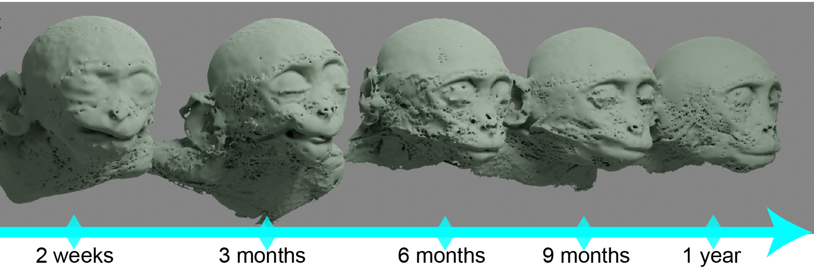

MF3D ‘Face-space’ construction¶
Parameterizing anatomical variations¶

A. Dürer (1528) originally proposed mathematical descriptions of variation in face shape using deformation grid. B. Leopold et al., 2006 used digital 3D scans of human faces to generate visual stimuli for neuroscientific research. The ‘face-space’ construct of facial identity variation features the average face at the center of a high-dimensional parameter space, in which distance from the center corresponds to facial distinctiveness.¶
One of the earliest studies of variation in anatomical proportions was by the German Renaissance artist Albrecht Dürer (1528), who described the application of deformation grids to mathematically describe variation in human facial anatomy. This approach was further developed by Scottish mathematical biologist D’Arcy Thompson in On Growth and Form (1917).
In the digital age, a pioneering study by Blanz & Vetter (1999) was the first to apply this approach to 3D face data acquired through laser scans of 200 human participants. Specifically, they used principal component analysis (PCA) to identify the major components of morphological variation in their sample. The resulting statistical description of ‘face space’ can be used to generate an infinite number of novel faces, which is now commercially available as the FaceGen software.
Craniofacial morphology analysis for MF3D¶
The method for creating the macaque face-space used to generate identity variations in MF3D is described in Murphy & Leopold (2019) and illustrated in figure 5 from that paper (below). Briefly, Corresponding vertices were manually selected on a low polygon count (50,000 vertices) base mesh topology (created based on individual M02 of the CT data sample) and the high poly raw surface meshes of each other individual (panel A). This was performed in the commercial software Wrap3, which then applies a warping process to produces a surface mesh with topology A and morphology B (bottom left of panel A). This process was repeated for each individual in the sample, and the resulting mesh data were then manually cleaned by a professional digital artist (bottom right of panel A).
The cleaned corresponding meshes of all individuals were then imported into Matlab, their vertex positions were averaged to generate the mesh of the sample mean and a PCA was run.
Fig. 5. Morphable face model construction. A. Example of manual selection of corresponding vertices on the low-poly base mesh topology (topology A) created from individual M02 (morphology A) and the high-poly raw surface mesh of individual M09 (right). The warping process produces a surface mesh with topology A and morphology B (bottom left), which can then be manually edited (bottom right). B. Sample mean mesh surface. C. First five principal components (mean ± 2σ) of macaque face-space. D. Locations of original sample identities (n = 23) projected into principal component face-space (first 3 PC dimensions only). E. Distribution of CT scan voxel volume for each individual plotted against their Euclidean distance from the sample mean (σ). F. Percentage of variance in sample cranio-facial morphology explained by each principal component. G. Distributions of demographic variables for Rhesus macaque CT data sample. H. Age trajectory through face-space for males calculated by averaging 5 youngest (2nd column) and 5 oldest (4th column) males, and extrapolating. I. Sexual dimorphism trajectory through face-space calculated by averaging 5 males (2nd column) and 5 females (4th column), and extrapolating. Colour map indicates the displacement of each vertex relative to the mean (middle column) for each mesh. Meshes were aligned via Procrustes method.
Sample space expansion¶

The validity of a ‘face-space’ is fundamentally limited by the sample used to construct it. The demographic make-up of the sample used to construct the original MF3D face-space is shown in Figure 5G above. All animals in this sample (N = 36) were over 4 years of age, and only a small proportion were female (N = 7). Although it is possible to identify an axis within the N-dimensional face-space that corresponds to age and then linearly extrapolate (Figure 5H), the resulting constructions of facial morphology are unlikely to be realistic (e.g. due to non-linear age related changes in facial morphology).
To resolve this issue, we expanded the sample used to construct the face-space model, using the UNC-Wisconsin Rhesus macaque Neurodevelopment Database (Young et al., 2017). This database includes anatomical (T1-weighted) MRI scans from 36 infant Rhesus macaques between the ages of 2 weeks to 4 years old, collected longitudinally (150 scans total). The demographic distribution of this additional sample is shown in the plot on the right. The figure below illustrates raw soft tissue surface reconstructions from the T1 data for an individual at 5 time points during the first year of life. The segmentation of soft tissue from MRI data is noticeably noisier than segmentations from CT data, requires more smoothing and therefore lacks comparable detail. However, the data are sufficient to estimate craniofacial morphology since we fit the existing base mesh (clean topology) constructed from CT data to these raw MRI-derived meshes.
{kind=link}

Expression transfer¶
Another limitation of the original MF3D model was that identity was parameterized separately from expression, and it was therefore not possible to generate faces of different individuals with the various modeled expressions. To resolve this issue we performed expression cloning, transferring the expression component of the original model into the face-space framework. This was achieved using Wrap3 (RS3D) software.